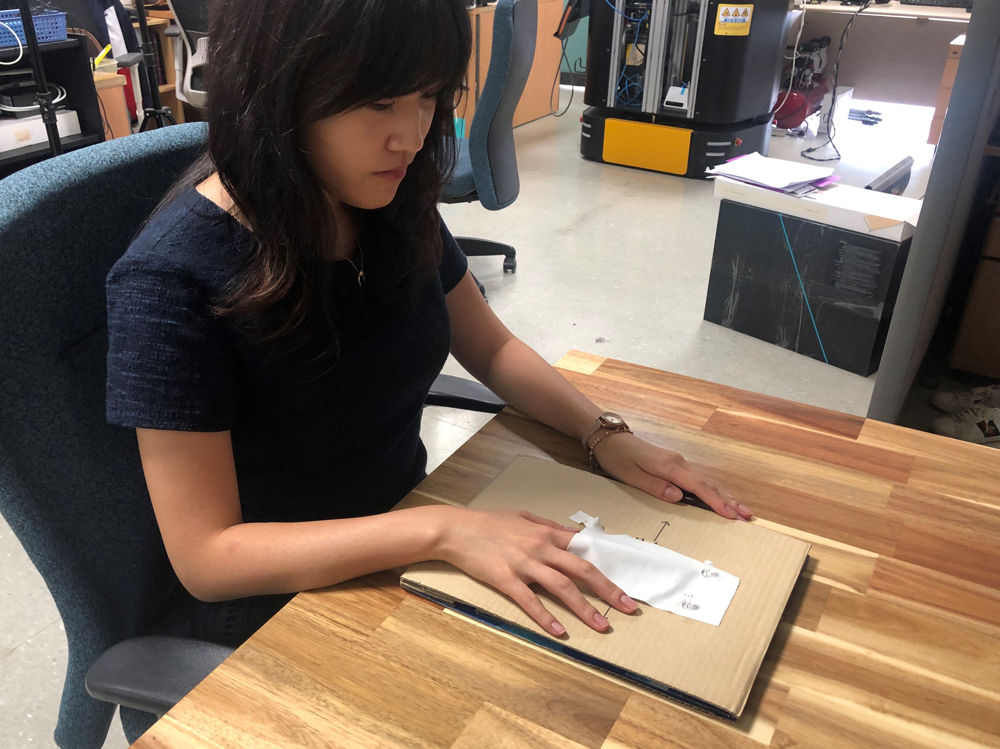
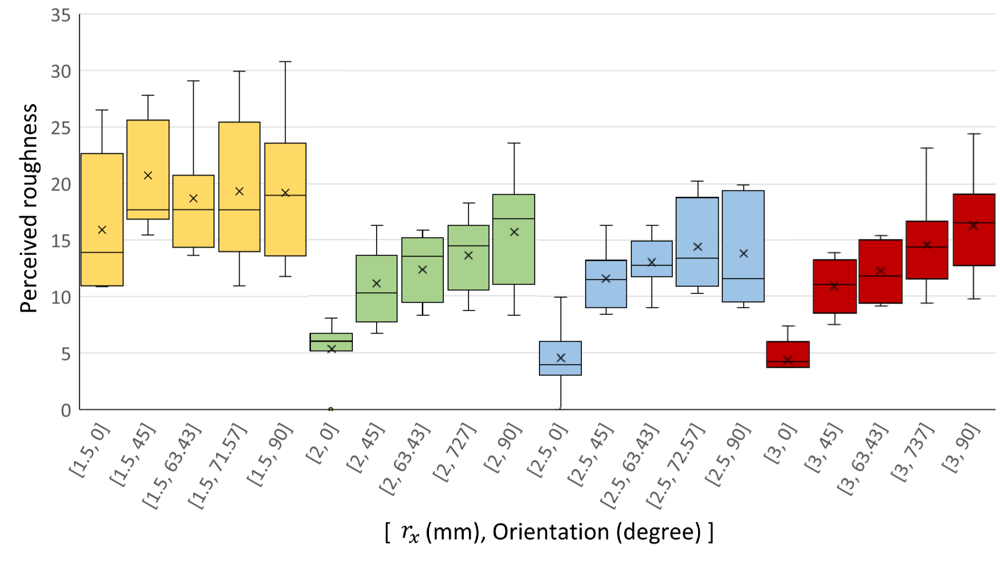

Subjects were asked to graze each of the
4 patches in horizontal direction under
5 different orientationsand evaluate roughness using a number while each patch was covered by an opaque cloth.

Average perceived roughness as a function of x-axis radius rx with different scanning directions
Both radii (F(3) =20.4, p<.001) and orientation (F(4) =17.2, p<.001) have significant main effects.
It is feasible to change perceived roughness by varying the scanning direction using our model.
We chose a textured surface model with rx = 3.0mm for our encountered-type haptic system which showed the widest range of average perceived roughness to maximize the effect.